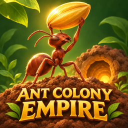

Ant Colony Empire
Dig the nest. Lay the trails. Defend the queen.
Help
You lead a young ant colony. Underground, tap Dig and drag across soil next to a tunnel; workers dig it out on their own. Build chambers in the rooms you dig. On the Surface, send scouts into the fog and lay pheromone trails to food: foragers walk them and carry food home. Later, raise soldiers in a Barracks to fight insects, bosses and rival raids. Five worlds and 75 missions lead to the Endless Siege.
My workers don't dig the cells I marked.
Red marks can't be reached. Start the marks next to an open tunnel.
Raiders keep stealing my food.
Only soldiers at home defend the entrance. Send the suggested squad, not the whole army, and use Call squads home when a raid is coming.
How do I change the language?
The game speaks 44 languages and follows your iPhone's language. To pick another one, open Settings › Language in the game.
Contact
Write to alfreditogames2025@gmail.com.
Privacy policy
Last updated: November 11, 2026
We don't collect personal data ourselves. There are no accounts and no sign-in. Your colony and settings are stored only on your device; deleting the app deletes them. The game does not use the microphone, camera, photos, contacts or location services.
Ads (Google AdMob)
The game is free. It only shows ads you choose to watch for a bonus (a mission reward doubled, free supplies, research finished now); there are no ads between screens. To show and measure ads, Google may collect your device's advertising identifier (only if you allow tracking in Apple's prompt), your IP address and approximate location, how you interact with ads, and crash and performance data. Where the law requires it (for example the EEA, the UK and some US states), Google's consent message asks for your choices first; you can change them any time in Settings › Privacy › Ad choices. You can also turn tracking off in iOS Settings › Privacy & Security › Tracking. Google's policy: policies.google.com/technologies/ads.
Game statistics and crash reports (Google Firebase)
To see which missions are too hard and to fix crashes, the game sends gameplay events to Google Firebase (for example "mission 12 finished", "battle won", "shop opened") and, if the app crashes, a crash report. They carry no name, email or anything you type (Firebase identifies the app install with a random ID, not you), and they are not used to personalize ads. Where the law requires consent (EEA, UK and others), statistics and crash reports are only sent after you accept in Google's consent message. Firebase may also send small balance updates (such as gift sizes) to the game. Google's policy: firebase.google.com/support/privacy.
Purchases
The Seed Sack, the Royal Cache and the Royal Charter are bought through Apple. Apple processes the payment; we never receive your payment details. Nothing sold in the game is random.
Game Center
Game Center is optional. If you sign in, Apple handles your achievements and leaderboard scores under Apple's privacy policy; we never see your account.
Ads are only suitable for all audiences (rated G). Questions: alfreditogames2025@gmail.com.
Report an ad
Saw an ad that was inappropriate, offensive or not suitable for all ages? Please tell us. Write to alfreditogames2025@gmail.com with what the ad showed and roughly when you saw it; a screenshot helps. We review every report and block the advertiser or category through Google AdMob.
Español: escríbenos qué mostraba el anuncio y cuándo lo viste. · Português: conte o que o anúncio mostrava e quando o viu. · Français : dites-nous ce que montrait la publicité et quand. · Deutsch: Schreib uns, was die Anzeige zeigte und wann. · Italiano: dicci cosa mostrava l'annuncio e quando. · 日本語：広告の内容と表示された日時をお知らせください。· 한국어: 광고 내용과 본 시간을 알려 주세요.
Español
Ayuda
Diriges una colonia de hormigas joven. Bajo tierra, toca Cavar y arrastra sobre la tierra junto a un túnel; las obreras cavan solas. Construye cámaras en los cuartos que caves. En la Superficie, manda exploradoras a la niebla y traza senderos de feromona hasta la comida. Después, cría soldados en un Cuartel para pelear contra insectos, jefes e incursiones. Cinco mundos y 75 misiones llevan al Asedio sin fin. Si las marcas salen en rojo, no se alcanzan: empiézalas junto a un túnel abierto.
Política de privacidad
Nosotros no recopilamos datos personales. No hay cuentas. La colonia se guarda solo en tu dispositivo y se borra si borras la app. No usa micrófono, cámara, fotos, contactos ni ubicación.
Anuncios (Google AdMob). El juego es gratis y solo muestra anuncios que tú eliges ver a cambio de un bono; no hay anuncios entre pantallas. Para mostrarlos y medirlos, Google puede recopilar el identificador de publicidad del dispositivo (solo si permites el rastreo en el aviso de Apple), tu dirección IP y ubicación aproximada, cómo interactúas con los anuncios y datos de fallos y rendimiento. Donde la ley lo exige, el mensaje de consentimiento de Google te pregunta primero; puedes cambiar tus opciones en Ajustes › Privacidad › Opciones de anuncios. Política de Google: policies.google.com/technologies/ads.
Estadísticas y fallos (Google Firebase). Para saber qué misiones son demasiado difíciles y corregir fallos, el juego envía a Google Firebase eventos de juego (por ejemplo "misión 12 terminada" o "batalla ganada") y, si la app se cierra por un error, un reporte del fallo. No incluyen tu nombre, correo ni nada que escribas, y no se usan para personalizar anuncios. Donde la ley exige consentimiento, estadísticas y reportes solo se envían si lo aceptas en el mensaje de Google.
Compras. El Costal de semillas, la Reserva Real y la Carta Real se compran a través de Apple; nunca recibimos tus datos de pago. Nada de lo que se vende es aleatorio. Game Center es opcional; Apple maneja tus logros y puntuaciones.
Reportar un anuncio. Si viste un anuncio inapropiado, escríbenos a alfreditogames2025@gmail.com con lo que mostraba y cuándo lo viste.
Português
Ajuda
Você comanda uma jovem colônia de formigas. Debaixo da terra, toque em Cavar e arraste sobre a terra ao lado de um túnel; as operárias cavam sozinhas. Construa câmaras nos espaços que cavar. Na Superfície, mande exploradoras para a névoa e trace trilhas de feromônio até a comida. Depois, crie soldados num Quartel para lutar contra insetos, chefes e invasões. Cinco mundos e 75 missões levam ao Cerco Sem Fim.
Política de privacidade
Nós não coletamos dados pessoais. Não há contas. A colônia fica só no seu aparelho e é apagada se você apagar o app. Não usa microfone, câmera, fotos, contatos nem localização.
Anúncios (Google AdMob). O jogo é grátis e só mostra anúncios que você escolhe assistir em troca de um bônus. Para exibi-los e medi-los, o Google pode coletar o identificador de publicidade do aparelho (só se você permitir o rastreamento no aviso da Apple), seu endereço IP e localização aproximada, como você interage com os anúncios e dados de falhas e desempenho. Onde a lei exige, a mensagem de consentimento do Google pergunta antes; você pode mudar suas escolhas em Ajustes › Privacidade › Opções de anúncios. Política do Google: policies.google.com/technologies/ads.
Estatísticas e falhas (Google Firebase). Para saber quais missões estão difíceis demais e corrigir falhas, o jogo envia ao Google Firebase eventos de jogo (por exemplo "missão 12 concluída") e, se o app fechar por erro, um relatório da falha. Não incluem seu nome, e-mail nem nada que você digite, e não são usados para personalizar anúncios. Onde a lei exige consentimento, estatísticas e relatórios só são enviados se você aceitar na mensagem do Google.
Compras. O Saco de sementes, a Reserva Real e a Carta Real são comprados pela Apple; nunca recebemos seus dados de pagamento. Nada vendido é aleatório. O Game Center é opcional. Para denunciar um anúncio: alfreditogames2025@gmail.com.
Confidentialité · Datenschutz · Privacy · プライバシー · 개인정보
Français. Nous ne collectons aucune donnée personnelle et il n'y a pas de compte ; la colonie reste sur votre appareil. Le jeu n'affiche que des publicités Google AdMob que vous choisissez de regarder contre un bonus. Google peut collecter l'identifiant publicitaire (seulement si vous autorisez le suivi), l'adresse IP, la position approximative, les interactions avec les publicités et des données de diagnostic. Vos choix : Réglages › Confidentialité › Choix publicitaires. Le Sac de graines, la Réserve royale et la Charte royale sont achetés via Apple, qui traite le paiement ; rien n'est aléatoire. Signaler une publicité : écrivez-nous.
Deutsch. Wir erheben selbst keine personenbezogenen Daten, es gibt kein Konto; die Kolonie bleibt auf deinem Gerät. Das Spiel zeigt nur Google-AdMob-Werbung, die du freiwillig für einen Bonus ansiehst. Google kann die Werbe-ID (nur wenn du Tracking erlaubst), IP-Adresse, ungefähren Standort, Interaktionen mit Werbung und Diagnosedaten erheben. Deine Auswahl: Einstellungen › Datenschutz › Werbeeinstellungen. Samensack, Königsvorrat und Königsurkunde werden über Apple gekauft; Apple wickelt die Zahlung ab, nichts ist zufällig. Anzeige melden: schreib uns.
Italiano. Non raccogliamo dati personali e non c'è un account; la colonia resta sul tuo dispositivo. Il gioco mostra solo annunci di Google AdMob che scegli di guardare in cambio di un bonus. Google può raccogliere l'identificativo pubblicitario (solo se consenti il tracciamento), l'indirizzo IP, la posizione approssimativa, le interazioni con gli annunci e dati diagnostici. Le tue scelte: Impostazioni › Privacy › Scelte pubblicitarie. Sacco di semi, Riserva Reale e Carta Reale si acquistano tramite Apple, che gestisce il pagamento; niente è casuale. Segnala un annuncio: scrivici.
日本語。当方は個人情報を収集せず、アカウントもありません。コロニーは端末にのみ保存されます。本ゲームは、ボーナスと引き換えに自分で選んで視聴する Google AdMob の広告だけを表示します。Google は広告ID（トラッキングを許可した場合のみ）、IPアドレス、おおよその位置情報、広告の操作、診断データを収集することがあります。設定：設定 › プライバシー › 広告の設定。種の袋・王室の蓄え・王室勅許状は Apple を通じて購入され、支払いは Apple が処理します。ランダムな商品はありません。広告の報告はメールでお知らせください。
한국어. 저희는 개인 정보를 수집하지 않으며 계정도 없어요. 군락은 기기에만 저장돼요. 이 게임은 보너스를 받으려고 직접 선택한 Google AdMob 광고만 보여 줘요. Google은 광고 식별자(추적을 허용한 경우에만), IP 주소, 대략적인 위치, 광고 상호작용, 진단 데이터를 수집할 수 있어요. 설정: 설정 › 개인정보 › 광고 설정. 씨앗 자루, 왕실 비축품, 왕실 칙허장은 Apple을 통해 구매하며 결제는 Apple이 처리해요. 무작위 상품은 없어요. 광고 신고는 이메일로 보내 주세요.
Google Firebase : statistiques de jeu et rapports de plantage, sans nom ni e-mail, jamais pour personnaliser les publicités ; envoyés seulement avec votre consentement là où la loi l'exige. · Google Firebase: Spielstatistiken und Absturzberichte ohne Name oder E-Mail, nicht für personalisierte Werbung; wo nötig nur mit deiner Einwilligung. · Google Firebase: statistiche di gioco e rapporti sugli arresti anomali, senza nome né e-mail, mai per personalizzare gli annunci; dove richiesto, solo con il tuo consenso. · Google Firebase：名前やメールを含まないゲーム統計とクラッシュレポートのみ。広告のパーソナライズには使用せず、法律で必要な地域では同意後にのみ送信します。· Google Firebase: 이름이나 이메일 없이 게임 통계와 오류 보고서만 보내며 광고 맞춤화에는 사용하지 않아요. 법이 요구하는 곳에서는 동의한 경우에만 보내요.
Contact: alfreditogames2025@gmail.com